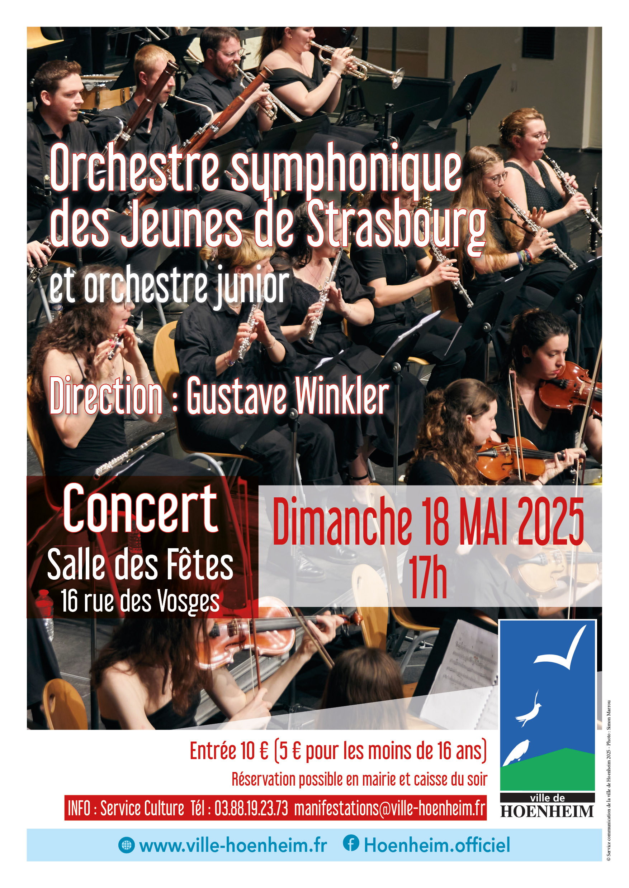

- Cet événement est terminé
Concert de l’Orchestre Symphonique des jeunes de Strasbourg
18 mai 2025 à 17 h 00 min - 19 h 00 min
Navigation de l'événement

Dans le cadre des rendez-vous musique et culture la ville de Hoenheim vous propose un concert de l’Orchestre Symphonique des jeunes de Strasbourg le dimanche 18 mai à 17h00 à la salle des fêtes 16 rue des Vosges à Hoenheim. L’orchestre junior participera également a ce concert en ouverture.
L’Orchestre symphonique des Jeunes de Strasbourg (OJS) permet à de jeunes musiciens âgés de 9 à 30 ans de pratiquer la musique d’ensemble. Il se décline en deux formations, l’orchestre des Jeunes et l’orchestre Junior.
Recrutés sur audition, les musiciens répètent chaque semaine à Strasbourg. Les instrumentistes ont tous des profils différents (collégiens, lycéens, étudiants, jeunes actifs) mais partagent un point commun : la passion de la musique.
Un savant panachage de travail sérieux, de bonne ambiance, de relations fortes et de projets motivants permet à l’association de vivre et de se développer sans cesse depuis 1988.
La réputation de ces deux ensembles s’est faite sur une exigence de haute qualité musicale. Les rencontres hebdomadaires de ces jeunes musiciens amateurs et ambitieux aboutissent à la réalisation de plusieurs programmes, composés de pièces du répertoire classique mais aussi moderne, et quelques fois de créations.
L’entrée est à 10 € et 5 € pour les moins de 16 ans
La prévente des billets se fait à la Mairie de Hoenheim auprès du Service Animation 03 88 19 23 73 ou manifestations@ville-hoenheim.fr.
Une caisse du soir sera également ouverte dès 16H30, dans la limite des places disponibles